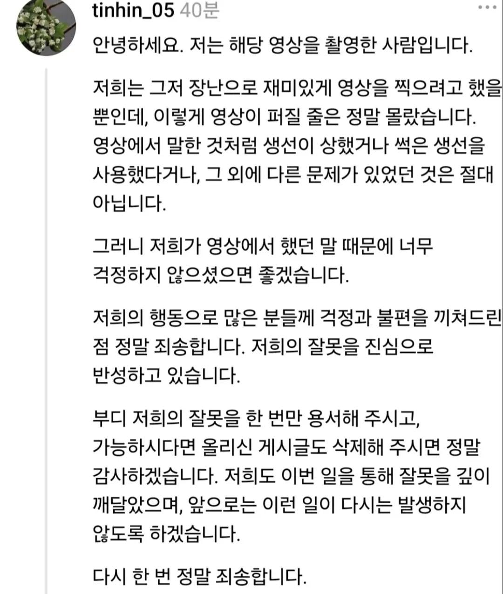
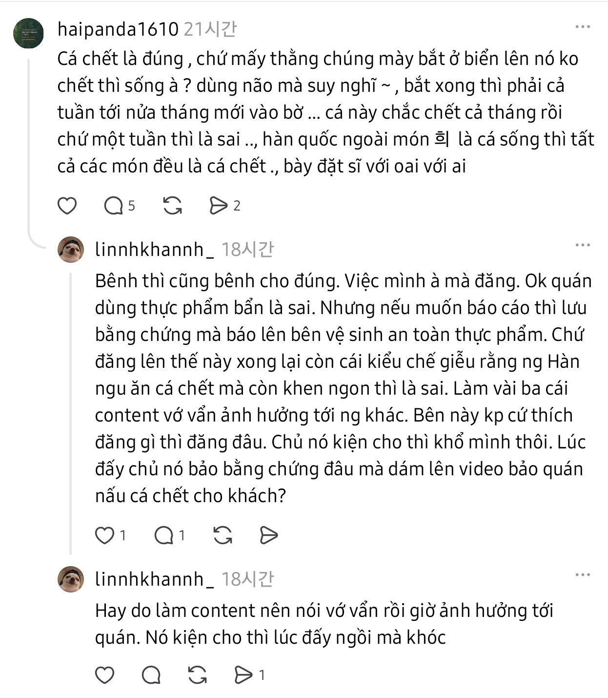
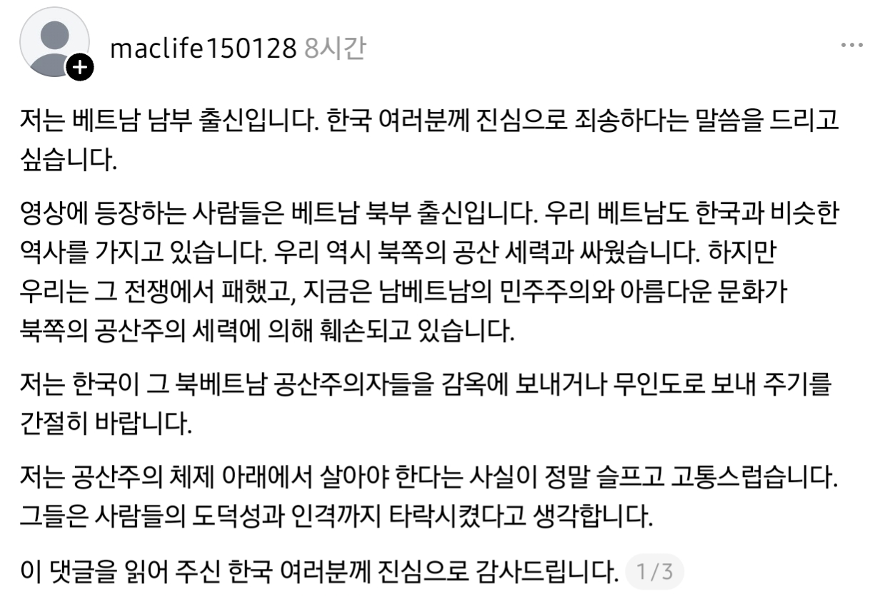
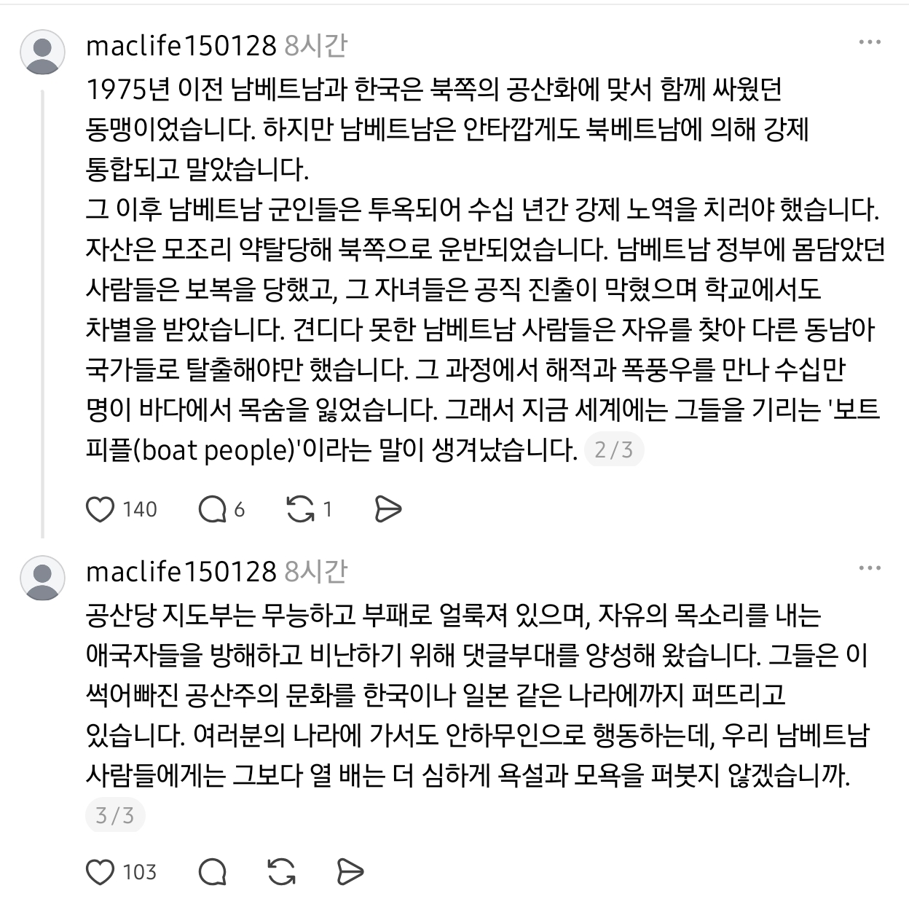
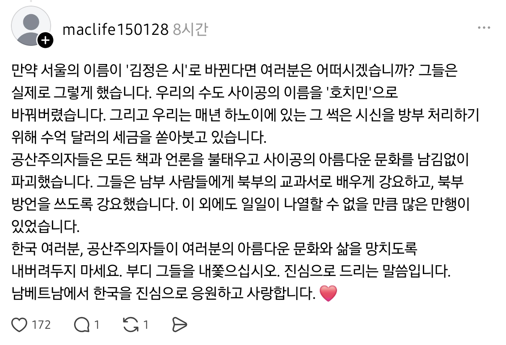
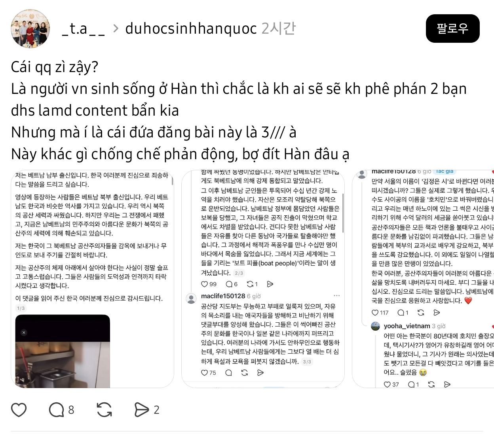

아래는 사과문

https://www.instagram.com/p/Dd-X1jATf9X
인스타그램에 올라왔던건데 인스타 계정 삭제해서
지금은 이 글을 볼 수가 없어
영상은 대체 왜 올렸는지 모르겠고
삭제해달라고 하고 사과문도 삭제한 걸로 봐서는
숨기고 싶은 마음이 더 큰 듯
음식에 대한 걱정을 하지 말아달라는데
음식에 대한 걱정만 문제인게 아니라
평소에 어떤 생각과 사상을 가졌는지 알 수 있었던 건데
맛있다고 칭찬해주는 손님들을 조롱하며
저런 농담을 하면서 깔깔거릴 정도면
뭐 말 다했지
이걸 본 베트남인들의 반응

아래는 번역한 내용
haipanda1610
“생선이 죽어 있는 게 당연하지. 너희가 바다에서 잡아 올린 생선이 안 죽고 살아 있기라도 하냐? 머리 좀 써서 생각해라~
잡고 나면 일주일에서 보름은 지나야 육지로 들어오기도 한다… 저 생선이 한 달이나 전에 죽은 건지는 모르겠지만, 일주일밖에 안 됐다는 말도 틀렸고.
한국에서도 회처럼 생으로 먹는 것 빼면 모든 생선 요리는 죽은 생선으로 만드는 거잖아.
괜히 유난 떨면서 누구한테 잘난 척하는 거냐.”
linhkhanhh_
“편을 들 거면 제대로 알고 편들어라. 같은 베트남 사람이라고 무작정 편드는 건 아니지.
그래, 식당에서 더럽거나 비위생적인 식재료를 사용하는 건 잘못이다. 하지만 신고하고 싶었으면 증거를 남겨서 식품위생·안전 담당 기관에 신고했어야 한다.
그런데 Threads에 올려놓고, 거기다 ‘한국인들은 죽은 생선을 먹으면서도 맛있다고 칭찬하더라’는 식으로 비웃는 태도를 보인 건 잘못이다.
조회수 얻겠다고 콘텐츠 몇 개 만들다가 여전히 다른 사람들에게 피해를 주고 있잖아. 여기서는 자기가 올리고 싶은 걸 뭐든 마음대로 올려도 되는 게 아니다.
식당 주인이 고소라도 하면 우리만 곤란해진다.
그때 식당 주인이 ‘증거가 어디 있냐’고 하면 어떡하려고, 감히 영상까지 올리면서 ‘이 식당은 손님에게 죽은 생선을 요리해 준다’고 한 거냐?”
linhkhanhh_
“아니면 조회수 뽑으려고 콘텐츠 만들겠다고 막 떠들어 놓고, 이제는 식당에까지 피해를 주고 있잖아.
식당에서 고소라도 하면 그때 가서 앉아서 울겠지.”
또 다른 반응



진짜 베트남인 맞나?
이에 대한 다른 베트남인 반응

번역한 내용
“이게 대체 뭐야?
한국에서 살고 있는 베트남 사람이라면 저 콘텐츠를 만든 유학생 두 명을 비판하지 않을 사람은 아마 없을 거야.
그런데 문제는 이 게시물을 올린 인간이 ‘3///’라는 거야.
이게 반동 세력에 맞서기는커녕 한국인들 비위나 맞추고 아부하는 거랑 뭐가 다르냐?”
베트남 인터넷에서 3 que, 3 sọc, 3/// 같은 표현은
보통 옛 남베트남(베트남 공화국) 또는 그 지지자, 반공 성향 사람들을 비하해서 부르는 표현임
///는 옛 남베트남 국기의 빨간색 세 줄을 가리키는 식의 표기
마지막 문장의 “b dit Hàn"은 꽤 저속한 표현으로
직역하면 “한국의 엉덩이를 빤다”란 뜻임
베트남은 남부랑 북부 인종이 다르지 않음??
체면치례 ㅇㅈㄹ 하면서 지가 잘못한거 지적하면 빡쳐하는게 북부라는데